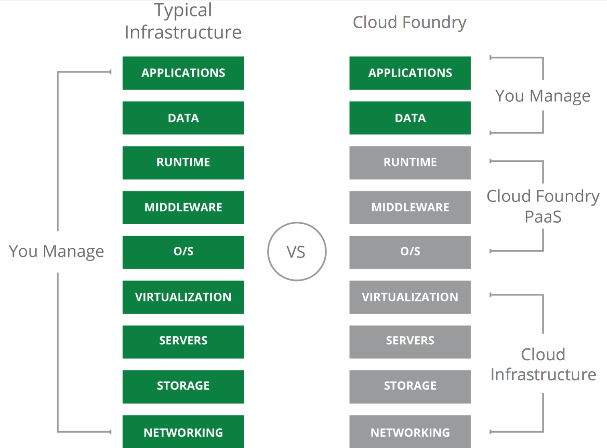
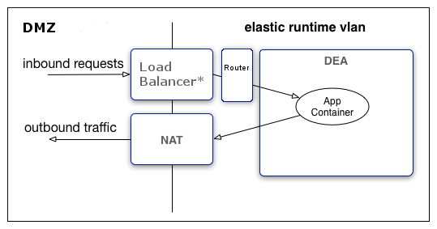
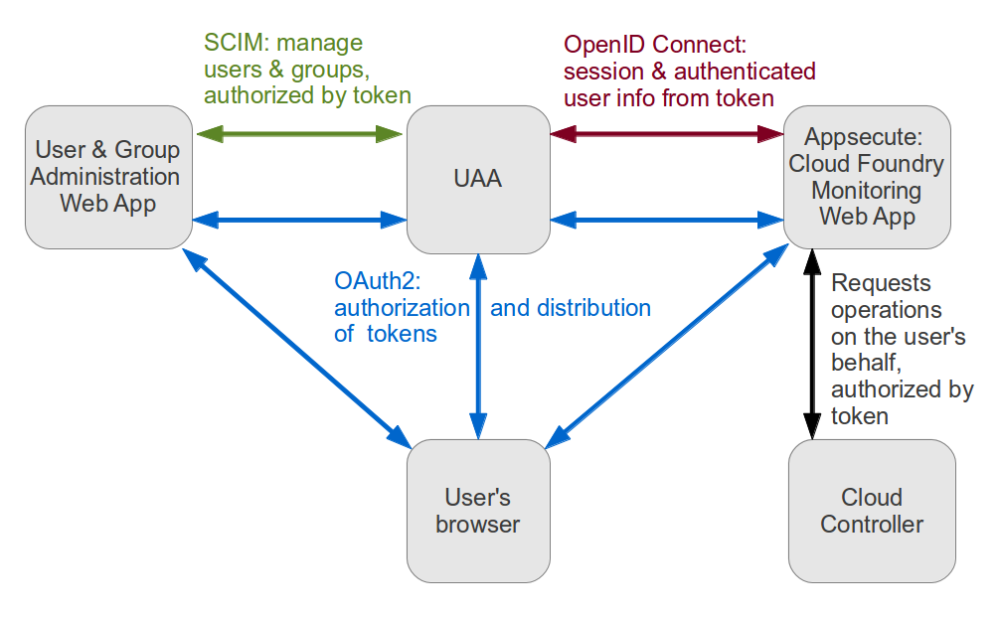

Cloud Foundry
A perspective for Large Dev Teams.
Agenda
What is Cloud Foundry?
Cloud Foundry is an open source cloud computing platform as a service (PaaS) originally developed by VMware and now owned by Pivotal Software - a joint venture by EMC, VMware and General Electric. Cloud Foundry was designed and developed by a small team from Google led by Derek Collison and was originally called project B29.
What is a PAAS?
The Architecture

CF Router
The router routes incoming traffic to the appropriate component, usually the Cloud Controller or a running application on a DEA node. In a larger production setup there is a pool of Routers load balanced behind a load balancer or http cache/balancer.
UAA
The OAuth2 server (the UAA) and Login Server work together to provide identity management.
DEA, Droplet Execution Agent
- Manage Warden containers: The DEA stages applications and runs applications in Warden containers.
- Stage applications: When a new application or a new version of an application is pushed to Cloud Foundry, the Cloud Controller selects a DEA from the pool of available DEAs to stage the application. The DEA uses the appropriate buildpack to stage the application. The result of this process is a droplet.
- Run droplets: A DEA manages the lifecycle of each application instance running in it, starting and stopping droplets upon request of the Cloud Controller.
References
- https://en.wikipedia.org/wiki/Cloud_Foundry
- https://github.com/cloudfoundry/gorouter
- https://docs.cloudfoundry.org/concepts/security.html
- https://blog.pivotal.io/pivotal-cloud-foundry/products/open-standards-in-cloud-foundry-identity-services
- https://docs.cloudfoundry.org/concepts/architecture/execution-agent.html
- http://biarca.io/technologies/cloud-foundry/
- http://www.activestate.com/blog/2014/09/cloud-foundry-diego-explained-onsi-fakhouri